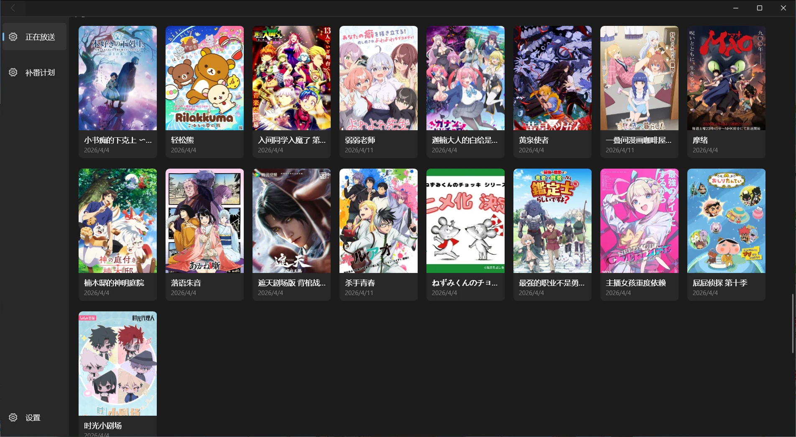

放送日历与番剧库
按星期浏览当前季放送，按年份和季度探索往季作品。

从放送日历到个人档案，
在本地记录并回顾你的动画生活。
问题反馈：QQ 3223271148
由于 CloudFlare 在国内服务不稳定，下载速度可能较慢。
推荐复制下载链接并使用 Motrix
等工具加速下载。
ANIMEIDO
按星期浏览当前季放送，按年份和季度探索往季作品。
集中查看今日放送、观看进度和待办计划，并使用 Windows 原生通知安排多个补番提醒。
保存评分、笔记、标签、观看感想与截图，查看统计并生成属于自己的年度回顾。
根据本地追番、评分和收藏 Tag 生成推荐，展示具体依据，并允许随时纠正偏好。
EXTENSIONS
基础安装包不包含以下插件。下载后可在 AniMeido 设置中的插件管理区域安装。
PlayerPlugin 0.4.6
提供在线剧集播放和用户导入的播放源管理。
下载插件包UPDATES